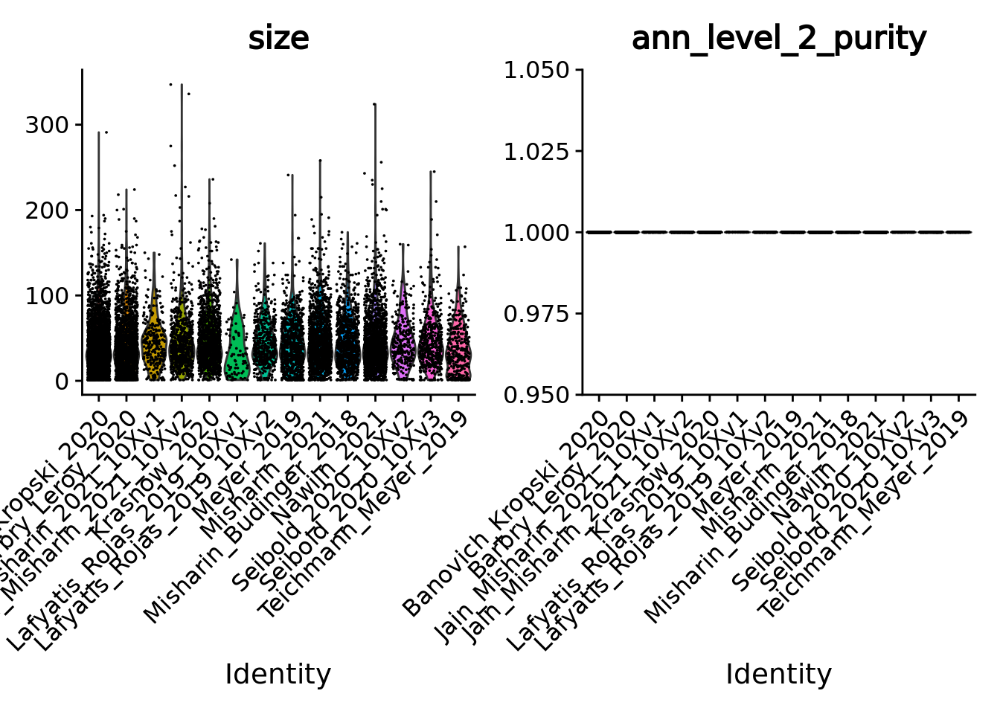
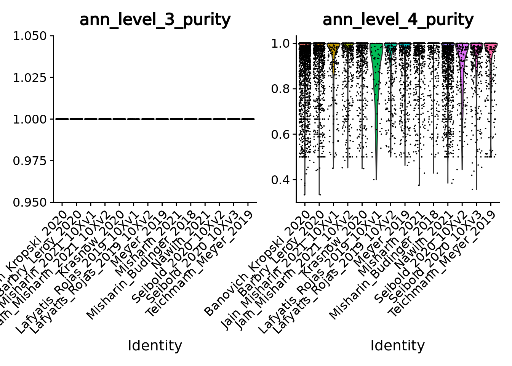
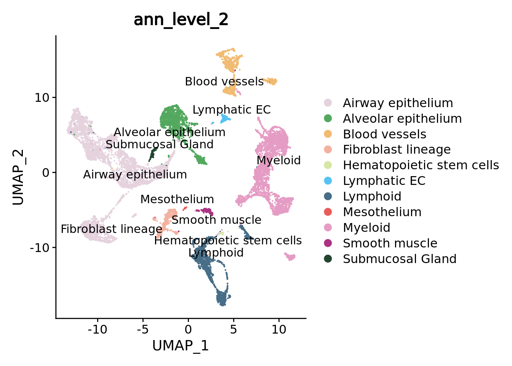
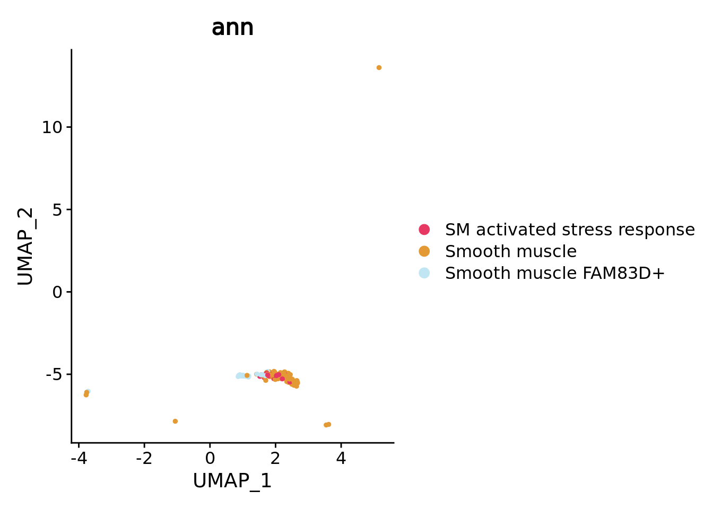

7.2 Supervised integration
As for the unsupervised integration example, we will work with the Human Cell Lung Atlas core HLCA gathering around 580,000 cells from 107 individuals distributed in 166 samples.
Taking advantage of the single-cell annotation of the original study we will build metacells for each cell type in each sample and guide the integration with the cell type label using STACAS.
7.2.1 Data loading
Please follow the section 1.4 to retrieve the HLCA atlas, divide the atlas by dataset and save the splitted data in the following folder: “data/HLCA/”.
7.2.2 Setting up the environment
First we need to specify that we will work with the MetacellAnalysisToolkit conda environment (needed for anndata relying on reticulate and the MCAT tool). To build the conda environment please follow the instructions on our MetacellAnalysisToolkit github repository.
library(reticulate)
conda_env <- conda_list()[reticulate::conda_list()$name == "MetacellAnalysisToolkit","python"]
Sys.setenv(RETICULATE_PYTHON = conda_env)#> used (Mb) gc trigger (Mb) max used (Mb)
#> Ncells 3519418 188.0 6488508 346.6 6488508 346.6
#> Vcells 6655103 50.8 1892615686 14439.6 2365317117 18046.0library(Seurat)
library(anndata)
library(SuperCell)
library(ggplot2)
color.celltypes <- c('#E5D2DD', '#53A85F', '#F1BB72', '#F3B1A0', '#D6E7A3', '#57C3F3', '#476D87',
'#E95C59', '#E59CC4', '#AB3282', '#23452F', '#BD956A', '#8C549C', '#585658',
'#9FA3A8', '#E0D4CA', '#5F3D69', '#58A4C3', "#b20000",'#E4C755', '#F7F398',
'#AA9A59', '#E63863', '#E39A35', '#C1E6F3', '#6778AE', '#91D0BE', '#B53E2B',
'#712820', '#DCC1DD', '#CCE0F5', '#CCC9E6', '#625D9E', '#68A180', '#3A6963',
'#968175')7.2.3 Constructing supervised metacell
Sikkema et al. made a remarkable job in finely annotating hundreds thousands of cells. Within the framework of this re-analysis, let’s now try to use this prior knowledge to obtain slightly better results using a supervised workflow.
We added in section 1.4 a ann_sample column in the metadata of the single cell object.
We now can use it to build metacell for each cell type in each sample.
If you are limited in memory you should still be able to process the samples by reducing the number of cores (e.g. -l 3) or
by sequentially processing the samples (just remove the -l) in a slightly longer time
This should take around 30 minutes.
for d in data/HLCA/datasets/*;
do cli/MCAT -t SuperCell -i $d/sc_adata.h5ad -o $d/sup_mc -a ann_sample -l 3 -n 50 -f 2000 -k 30 -g 50 -s adata
done7.2.4 Load metacell objects
We load the .h5ad objects and directly convert them in Seurat objects to benefit from all the functions of this framework. To consider the datasets in the same order as the one used in this tutorial we run the following chunk before loading the metacell objects.
library(anndata)
adata <- read_h5ad("data/HLCA/local.h5ad",backed = "r")
adata$var_names <- adata$var$feature_name # We will use gene short name for downstream analyses
datasets <- unique(adata$obs$dat)
rm(adata)
gc()
metacell.files <- sapply(datasets, FUN = function(x){paste0("data/HLCA/datasets/",x,"/sup_mc/mc_adata.h5ad")})
metacell.objs <- lapply(X = metacell.files, function(X){
adata <- read_h5ad(X)
countMatrix <- Matrix::t(adata$X)
colnames(countMatrix) <- adata$obs_names
rownames(countMatrix) <- adata$var_names
sobj <- Seurat::CreateSeuratObject(counts = countMatrix,meta.data = adata$obs)
sobj <- RenameCells(sobj, add.cell.id = unique(sobj$sample)) # we give unique name to metacells
return(sobj)
})7.2.5 Merging objects and basic quality control
Given the single-cell metadata, the MCAT tool automatically assigns annotations to metacells and computes purities for all the categorical variables present in the metadata of the input single-cell object.
Thus, let’s check the purity of our metacells at different level of annotations, as well as their size (number of single cells they contain).
To do so we merge the objects together and use Seurat VlnPlot function.
unintegrated.mc <- merge(metacell.objs[[1]], metacell.objs[-1])
VlnPlot(unintegrated.mc[, unintegrated.mc$ann_level_3 != "None"], features = c("size", "ann_level_2_purity"), group.by = 'dataset', pt.size = 0.001, ncol = 2)
#> Warning in SingleExIPlot(type = type, data = data[, x, drop = FALSE], idents =
#> idents, : All cells have the same value of ann_level_2_purity.
VlnPlot(unintegrated.mc[, unintegrated.mc$ann_level_3 != "None"], features = c("ann_level_3_purity", "ann_level_4_purity"), group.by = 'dataset', pt.size = 0.001, ncol=2)
#> Warning in SingleExIPlot(type = type, data = data[, x, drop = FALSE], idents =
#> idents, : All cells have the same value of ann_level_3_purity.
We can also use box plots.
p_4 <- ggplot(unintegrated.mc@meta.data, aes(x = dataset, y = ann_level_4_purity, fill = dataset)) + geom_boxplot() +
scale_x_discrete(guide = guide_axis(angle = 45)) + ggtitle("sup metacells level 4 purity") + NoLegend() + ylim(c(0,1))
p_finest <- ggplot(unintegrated.mc@meta.data, aes(x = dataset, y = ann_finest_level_purity, fill = dataset)) + geom_boxplot() +
scale_x_discrete(guide = guide_axis(angle = 45)) + ggtitle("sup metacells finest level purity") + NoLegend() + ylim(c(0,1))
p_4 + p_finest
Overall using supervised metacells construction we obtain pure metacells until the 3rd level of annotation and improve metacell purities for finer levels compared to the unsupervised approach (see previous section @ref(integration_unsupervised)).
meta.data.unsup <- readRDS("data/HLCA/combined.mc.unsup.rds")@meta.data
p_4_unsup <- ggplot(meta.data.unsup, aes(x = dataset, y = ann_level_4_purity, fill = dataset)) + geom_boxplot() +
scale_x_discrete(guide = guide_axis(angle = 45)) + ggtitle("unsup metacells level 4 purity") + NoLegend() + ylim(c(0,1))
p_finest_unsup <- ggplot(meta.data.unsup, aes(x = dataset, y = ann_finest_level_purity, fill = dataset)) + geom_boxplot() +
scale_x_discrete(guide = guide_axis(angle = 45)) + ggtitle("unsup metacells finest level purity") + NoLegend() + ylim(c(0,1))
p_4_unsup | p_4
p_finest_unsup + p_finest
7.2.6 Unintegrated analysis
Let’s first do a standard dimensionality reduction without batch correction.
DefaultAssay(unintegrated.mc) <- "RNA"
unintegrated.mc <- NormalizeData(unintegrated.mc)
unintegrated.mc <- FindVariableFeatures(unintegrated.mc)
unintegrated.mc <- ScaleData(unintegrated.mc)
unintegrated.mc <- RunPCA(unintegrated.mc)
unintegrated.mc <- RunUMAP(unintegrated.mc,dims = 1:30)
umap.unintegrated.datasets <- DimPlot(unintegrated.mc,reduction = "umap",group.by = "dataset") + NoLegend() + ggtitle("unintegrated datasets")
umap.unintegrated.types <- DimPlot(unintegrated.mc,reduction = "umap",group.by = "ann_level_2",label = T,repel = T,cols = color.celltypes)+ NoLegend() + ggtitle("unintegrated cell types")
umap.unintegrated.datasets + umap.unintegrated.types
You can see on the plots that a batch effect is clearly present at the metacell level. Let’s correct it using a supervised approach.
7.2.7 STACAS integration
In the original study, datasets were integrated using SCANVI semi-supervised integration using partial annotation obtained for each dataset prior integration.
Here in this second example we propose to use a similar approach in R using STACAS. We will use the “ann” labels we used to construct the metacells (3rd level of annotation if available for the cell, otherwise 2nd level).
To be noted that, as in the original study, we use the dataset rather than the donor as the batch parameter. See method section Data integration benchmarking of the original study for more details.
# Install package if needed
if (!requireNamespace("STACAS")) remotes::install_github("carmonalab/STACAS", upgrade = "never")
library(STACAS)
t0_integration <- Sys.time()
n.metacells <- sapply(metacell.objs, FUN = function(x){ncol(x)})
names(n.metacells) <- datasets
ref.names <- sort(n.metacells,decreasing = T)[1:5]
ref.index <- which(datasets %in% names(ref.names))
# normalize and identify variable features for each dataset independently
metacell.objs <- lapply(X = metacell.objs, FUN = function(x) {
DefaultAssay(x) <- "RNA";
x <- RenameCells(x, add.cell.id = unique(x$sample)) # we give unique name to metacells
x <- NormalizeData(x)
return(x)})
gc()
# Perform a supervised integration of the dataset using STACAS
combined.mc <- Run.STACAS(object.list = metacell.objs,
anchor.features = 2000,
min.sample.size = 80,
k.weight = 80, #smallest dataset contains 86 metacells
cell.labels = "ann", # Note that by not you can use STACAS in its unsupervised mode
reference = ref.index, # the 5 biggest datasets are used as reference
dims = 1:30)
tf_integration <- Sys.time()
tf_integration - t0_integration
remove(metacell.objs) # We don't need the object list anymore
gc()Check the obtained object:
combined.mc
#> An object of class Seurat
#> 30024 features across 12914 samples within 2 assays
#> Active assay: integrated (2000 features, 2000 variable features)
#> 1 other assay present: RNA
#> 1 dimensional reduction calculated: pcaWe can verify that the sum of metacell sizes correspond to the original number of single-cells
sum(combined.mc$size)
#> [1] 584944STACAS directly returns a pca for the slot "integrated" that we can use to make a UMAP of the corrected data.
DefaultAssay(combined.mc) = "integrated"
combined.mc <- RunUMAP(combined.mc, dims = 1:30, reduction = "pca", reduction.name = "umap")Now we can make the plots and visually compare the results with the unintegrated analysis.
umap.stacas.datasets <- DimPlot(combined.mc,reduction = "umap",group.by = "dataset") + NoLegend() + ggtitle("integrated datasets")
umap.stacas.celltypes <- DimPlot(combined.mc,reduction = "umap",group.by = "ann_level_2",label = T,repel = T,cols = color.celltypes) + NoLegend() + ggtitle("integrated cell types")
umap.stacas.datasets + umap.stacas.celltypes + umap.unintegrated.datasets + umap.unintegrated.types
STACAS efficiently corrected the batch effect in the data while keeping the cell type separated.
We can navigate in the different annotation levels.
library(ggplot2)
DimPlot(combined.mc,group.by = "ann_level_1",reduction = "umap",cols= color.celltypes)
DimPlot(combined.mc,group.by = "ann_level_2",reduction = "umap",label = T,repel = T,cols= color.celltypes)
DimPlot(combined.mc,group.by = "ann_level_3",reduction = "umap",label = T, repel = T,cols= color.celltypes) + NoLegend()
7.2.8 Comparison with unsupervised analysis
we can quickly visually compare these results with the unsupervised integration obtained with Seurat:
combined.mc.unsup <- readRDS("data/HLCA/combined.mc.unsup.rds")
combined.mc$ann_level_3 <- factor(combined.mc$ann_level_3)
matched.color.celltypes <- color.celltypes[1:length(levels(combined.mc$ann_level_3))]
names(matched.color.celltypes) <- levels(combined.mc$ann_level_3)
level3_sup <- DimPlot(combined.mc,group.by = "ann_level_3",reduction = "umap",label = T, repel = T,cols= matched.color.celltypes) + NoLegend() + ggtitle("Sup workflow")
level3_unsup <- DimPlot(combined.mc.unsup,group.by = "ann_level_3",reduction = "umap",label = T, repel = T,cols= matched.color.celltypes) + NoLegend() + ggtitle("Unsup workflow")
level3_sup + level3_unsup
Look at epithelial cells in particular
level3_sup <- DimPlot(combined.mc[,combined.mc$ann_level_1 == "Epithelial"],group.by = "ann_level_3",reduction = "umap",label = T, repel = T,cols= matched.color.celltypes) + NoLegend() + ggtitle("Sup workflow")
level3_unsup <- DimPlot(combined.mc.unsup[,combined.mc.unsup$ann_level_1 == "Epithelial"],group.by = "ann_level_3",reduction = "umap",label = T, repel = T,cols= matched.color.celltypes) + NoLegend() + ggtitle("Unsup workflow")
level3_sup + level3_unsup
7.2.9 Downstream analysis
You can try conduce the same downstream analyses as in the previous example @ref(integration_unsupervised) (clustering, cell type abundances, DEG …).
Here to show you the interest of supervised workflow with pure metacell we can zoom on the smooth muscle sub types. Despite the low metacell number for each cell type these different subtypes are separated on the UMAP, especially the rare FAM83D+ smooth muscles that were discovered in the original study.
combined.mc$ann <- factor(combined.mc$ann)
color.celltypes.ann <- color.celltypes[c(1:length(levels(combined.mc$ann)))]
names(color.celltypes.ann) <- levels(combined.mc$ann)
DimPlot(combined.mc[,combined.mc$ann_level_2 == "Smooth muscle"],group.by = "ann",cols = color.celltypes.ann)
Using a DEG analysis we can check if we retrieve their markers. MYH11 and CNN1 genes are canonical smooth muscle markers while FAM83D was found uniquely and consistently expressed by this rare cell type in the original study
DefaultAssay(combined.mc) <- "RNA"
Idents(combined.mc) <- "ann"
markersSmoothMuscle <- FindMarkers(combined.mc,ident.1 = "Smooth muscle FAM83D+",only.pos = T)
head(markersSmoothMuscle)
#> p_val avg_log2FC pct.1 pct.2 p_val_adj
#> MYOCD 1.889342e-175 1.3869594 0.758 0.022 5.294693e-171
#> ASB5 1.754802e-130 0.2913375 0.303 0.004 4.917658e-126
#> NMRK2 1.103717e-129 0.4245135 0.273 0.003 3.093057e-125
#> PLN 1.568445e-124 3.1280687 0.879 0.044 4.395411e-120
#> HSPB3 7.379856e-121 1.0364463 0.545 0.016 2.068131e-116
#> CASQ2 4.376973e-117 1.1063566 0.636 0.023 1.226603e-112
markersSmoothMuscle[c("MYH11","CNN1","FAM83D"),]
#> p_val avg_log2FC pct.1 pct.2 p_val_adj
#> MYH11 2.596787e-32 4.248525 0.970 0.287 7.277236e-28
#> CNN1 7.220235e-71 4.623065 0.970 0.106 2.023399e-66
#> FAM83D 3.561820e-11 2.186449 0.636 0.285 9.981643e-07
# Many classical smooth muscles cells are not annotated at the 3rd level of annotation (labelled None)
VlnPlot(combined.mc,features = c("MYH11","CNN1","FAM83D"),group.by = "ann",ncol = 2,cols = color.celltypes.ann)
7.2.10 Conclusion
Taking advantage of the single cell annotation in a supervised workflow we could improve the precision of our metacell re-analysis. When cell annotations are given and of good quality, which is far from being the case every time, building metacells accordingly and use a supervised integration workflow should be preferred.
To be noted that we used an intermediary level of annotation to supervise our analysis, using a finer level for this data would have resulted in a longer time for metacell building. PLus, we would have obtained to few metacells per cell type in the different sample to be able to make an efficient supervised batch correction with STACAS.
To be more precise at the cost of computational efficiency one could also try to reduce the graining level of the analysis (using a graining level of 20 for instance),
To conclude, keep in mind that in one hand, for certain analysis such as rare cell type analysis, we will never achieve the same level of sensitivity with metacells compared to single-cells. On the other hand, you certainly won’t be able to analyze so many single-cells so easily, and you may not need extremely fine cell-type resolution for many analyses.